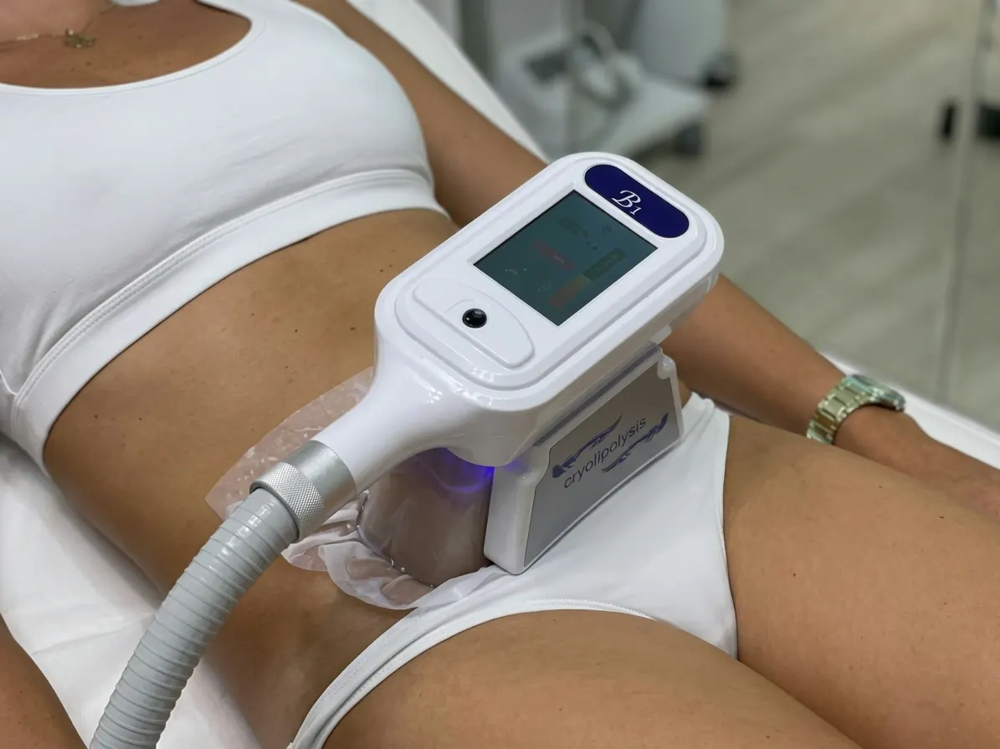
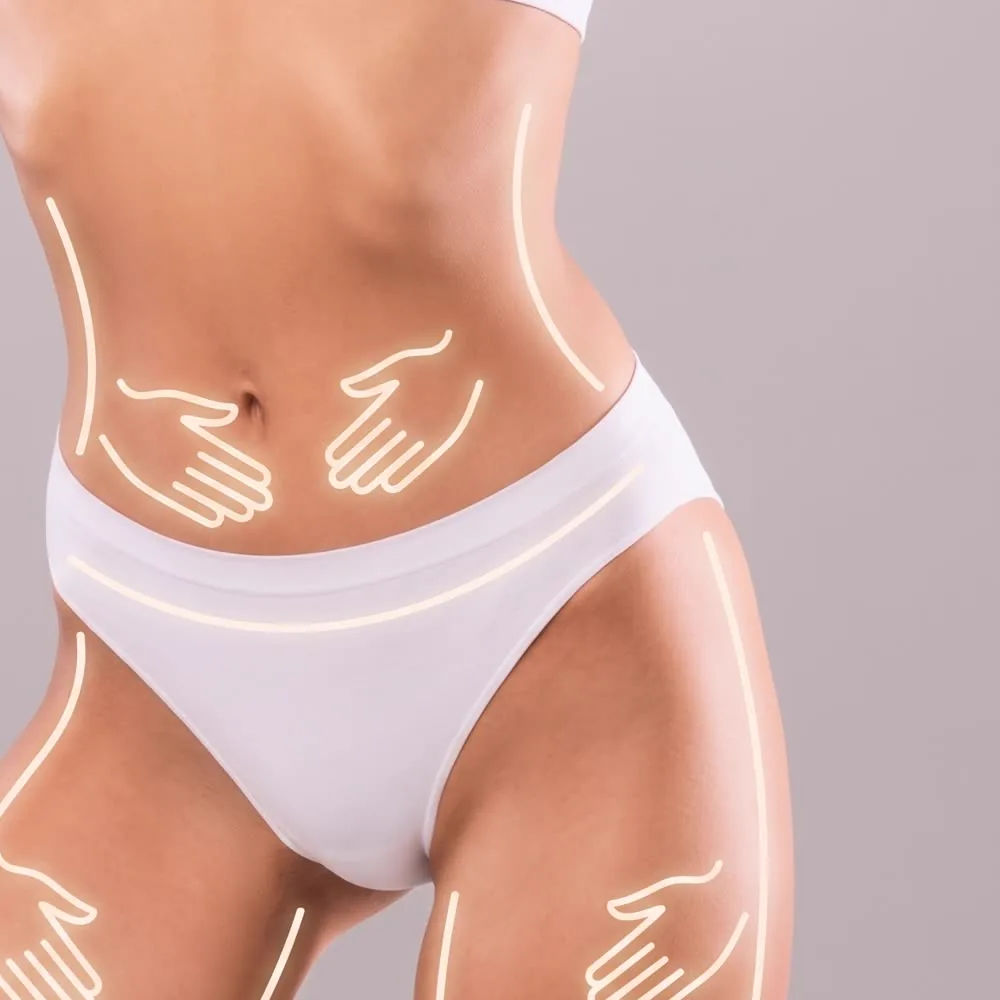

Body treatments · Jeżyce, Poznań
A non-invasive treatment in which an applicator cools a chosen area of the body. It targets a fat bulge that stays despite diet and exercise. One area, about an hour, and the effect appears gradually over the following weeks. At our studio in Jeżyce, ul. Zeylanda 3/1. We speak English.

How it works
Cryolipolysis uses the fact that fat cells are more sensitive to cold than the skin and tissue around them. An applicator with suction draws in the bulge on the chosen area and keeps it at a controlled low temperature for a set time.
The body then gradually clears the cooled fat cells, which is why you do not see the effect as soon as you leave the studio. The change is usually assessed after a few weeks. And to be honest: it is not a weight-loss method. The treatment makes sense for a specific bulge you can pinch, not as a way to lose kilograms.

Benefits
Stomach, sides, thighs or another spot where tissue stays despite training and watching what you eat.
The treatment is non-invasive - after the visit you go back to your normal day.
One session is one specific area, chosen together with us before the treatment.
Cryolipolysis can be combined with lymphatic drainage or anti-cellulite massage, on separate days.
Step by step
We ask about pregnancy, chronic conditions, sensitivity to cold, circulation problems, hernias and fresh scars in the treated area. With cryolipolysis this conversation is essential.
We assess the bulge and choose the area. Cryolipolysis works on tissue that can be pinched, so not every spot is suitable.
We place a protective membrane on the skin, then the applicator. At first you feel suction and intense cold, which turns into numbness after a few minutes.
The skin may be red, numb or slightly swollen for a while - this passes. A further treatment on the same area is planned a few weeks later.
Times & prices
The treatment takes about 60 minutes and covers one area. If you want to work on several spots, we will agree a plan and the gaps between visits at the first consultation.
Contraindications
With sensory disorders, circulation problems, diabetes, or during medical treatment, we decide after talking to you, and if in doubt we ask you to check with your doctor. We go through the full list of contraindications before the first visit.
FAQ
A non-invasive treatment in which an applicator with suction cools a chosen area of the body. Fat cells are more sensitive to cold than the tissue around them, and the body gradually clears the ones damaged by cooling on its own.
Not straight away. The body clears the cooled fat cells gradually, so the change is usually assessed a few weeks after the treatment.
No. It is a treatment for a local fat bulge you can pinch, not a weight-loss method. It will not replace diet or exercise.
At first you feel suction and intense cold, which usually turns into numbness after a few minutes. Afterwards the skin may be red and numb for a while.
It depends on the area and the thickness of the bulge. Sometimes one is enough; sometimes a second treatment on the same area is planned a few weeks later. We decide after the first visit.
Well in advance. The effect appears gradually over the weeks after the treatment, and sometimes a second treatment on the same area is planned. If you are thinking about summer, the best time is January to March.
Book online · We speak English
Most foreign guests message us on WhatsApp - write in English and we will reply in English.
Contact · Booking · We speak English
We use necessary cookies to make the site work. With your consent we would also like to use Google Analytics to see which pages are useful. You can change your choice at any time. Details in our privacy policy (in Polish).
Needed for the site to work and to remember your choice. They cannot be switched off.
Google Analytics - aggregated visit statistics. Off by default.